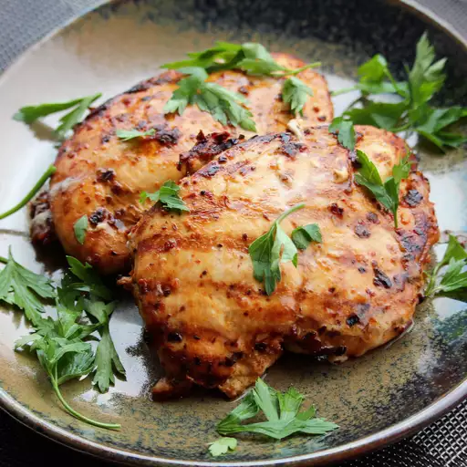

Chicken

Description: It's a great chicken fry
Ingredients
- 1 ounce dried chipotle chile pepper
- 1 ounce dried ancho chile pepper
- ½ cup water
- ½ red onion, cut into small chunks
- 4 cloves garlic
- 2 ½ pounds skinless, boneless chicken thighs
- 2 tablespoons olive oil
Directions:
-
Place chipotle and ancho chile peppers in a shallow bowl; pour in water. Cover the bowl and let sit at room
temperature until peppers are softened, 10 to 12 hours. Drain water and remove seeds from peppers.
-
Blend chile peppers, red onion, garlic, sea salt, cumin, oregano, and black pepper in a blender until a coarse
paste forms; add olive oil and blend until marinade is smooth.
-
Place chicken thighs between 2 sheets of heavy plastic on a solid, level surface. Firmly pound chicken with the
smooth side of a meat mallet to a 1/2-inch thickness.
-
Preheat an indoor grill with top and bottom plates for medium-high heat.
-
Remove chicken from the bag and discard marinade.
-
Place chicken on the preheated grill, close the lid, and cook until no longer pink in the center and the juices
run clear, 5 to 7 minutes. An instant-read thermometer inserted into the center should read at least 165 degrees
F (74 degrees C). Cut chicken into strips and serve warm.